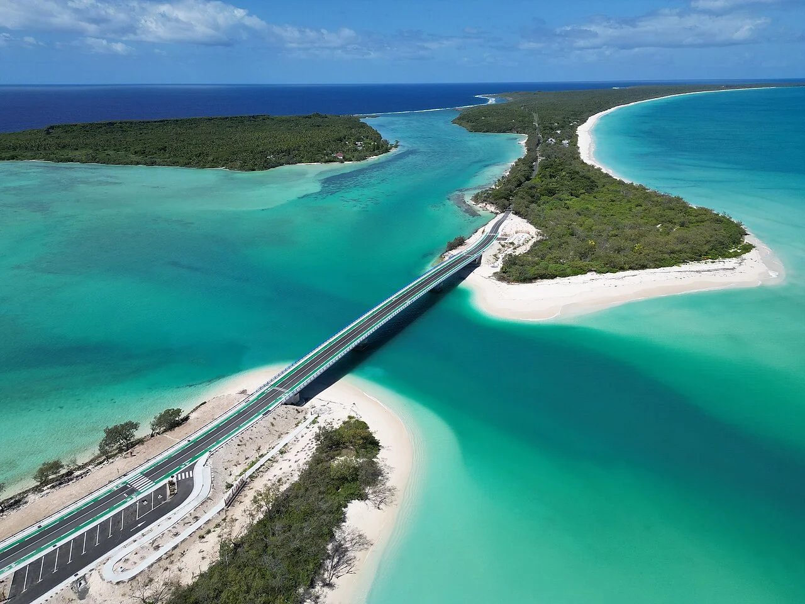

Pont de Mouli — Ouvéa
Ouvéa, Nouvelle-Calédonie · baignade, snorkeling

Plage de sable blanc d’environ six kilomètres, prolongement de celle de Fayaoué, dans le lagon d’Ouvéa, inscrit au patrimoine mondial de l’UNESCO en 2008. Le lagon y est calme et peu profond, et l’accès à la plage est libre et gratuit. Au bout de la route, le pont de Mouli (180 m, inauguré en décembre 2023) permet de voir tortues, raies et poissons, attirés par le courant, sans se mouiller.
- Lieu
- Ouvéa, Nouvelle-Calédonie
- Niveau
- Variable selon les conditions
- Activités
- baignade, snorkeling
- Type d'eau
- Mer / océan
- Coordonnées
- -20.70, 166.47 (position approximative du secteur)
Dangers à connaître
- Baignade interdite dans la baie de Lékiny, réserve coutumière.
- Mouli est un district coutumier : respecte les usages locaux, dont le salut traditionnel en entrant dans la tribu.
- Un courant passe sous le pont, c’est ce qui attire la faune : renseigne-toi sur place avant de nager près du pont.
- Les cyclones se forment de novembre à mi-mai, plus probables de fin décembre à début avril.
Le conseil d'Ocean Buddy
Explore les eaux claires près du pont, ou observe depuis le pont. Pour les falaises de Lékiny et les sorties en bateau, il est nécessaire de faire appel à un guide local.
Ouvrir dans Ocean Buddy Télécharger sur l'App Store
Source : Fiche Ocean Buddy · décembre 2026 · d’après Routard (presqu’île de Mouli), Wikipédia (Ouvéa) et Climats et Voyages · à vérifier localement.